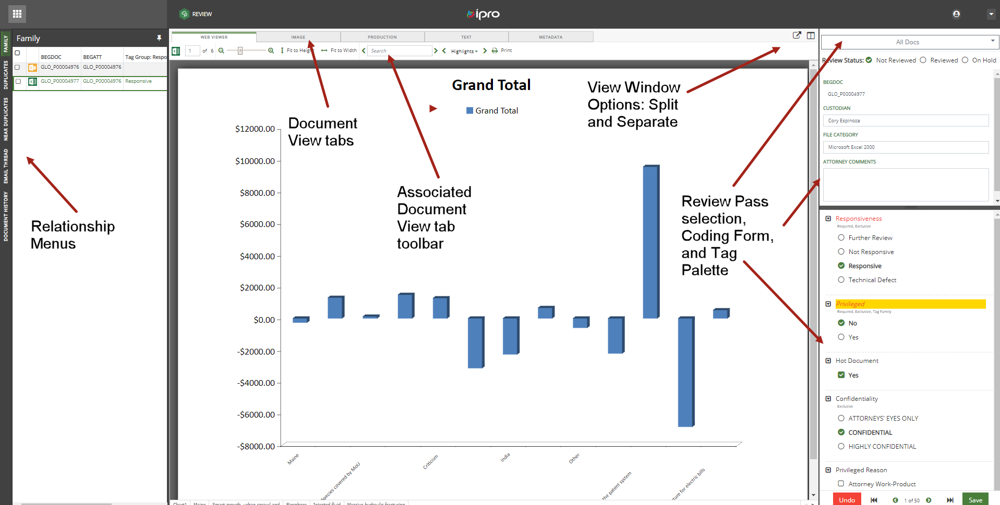

The Review pane consists of the following:
Relationship Menus: Displays the default
Viewer Option Icons: Display the document in a separate Document View and split the Document View screens.
Document View tabs:
Review Passes drop-down menu: Displays Review Pass selections configured by the administrator in
Enter Case: Opens the Case View where the
Review Status: Options include Not Reviewed (default), Reviewed, and On Hold.
Coding Form: Displays fields associated with the current Review Pass selection and the associated Tag Palette.
Review Navigation toolbar: Save changes to the current document, move to the next document for review, or Undo changes
Related Topics